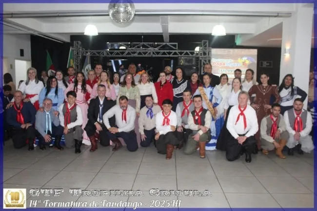
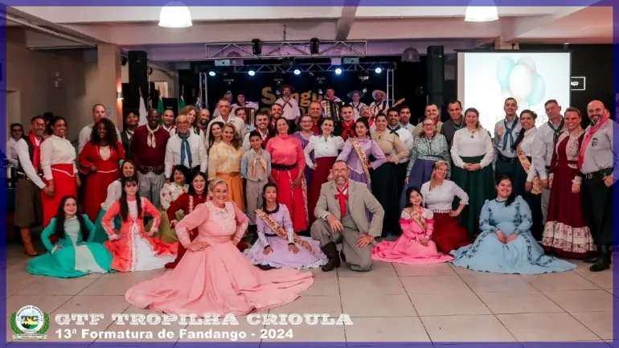
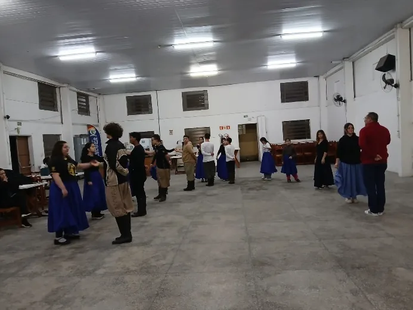
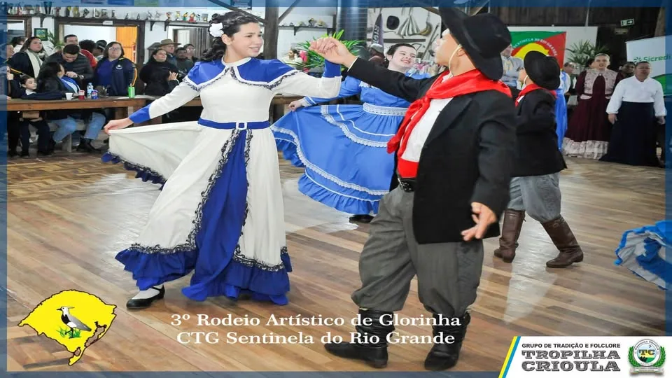
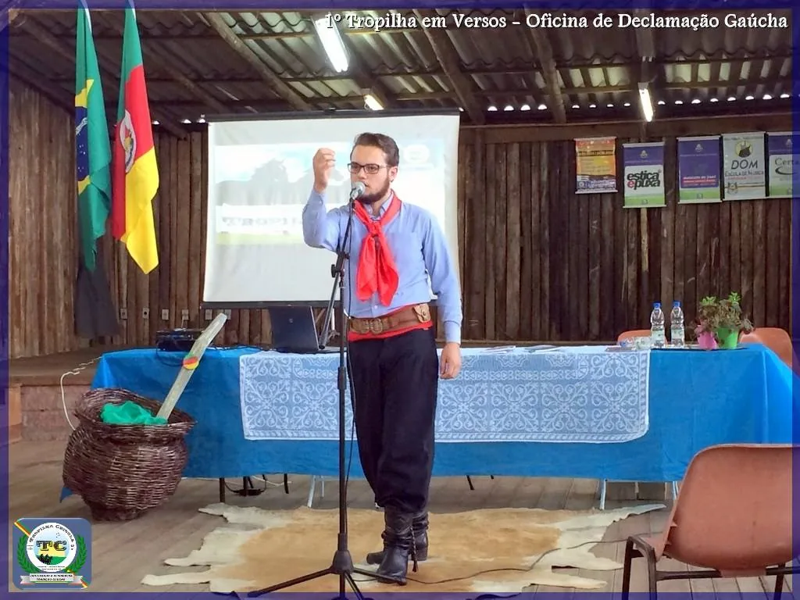
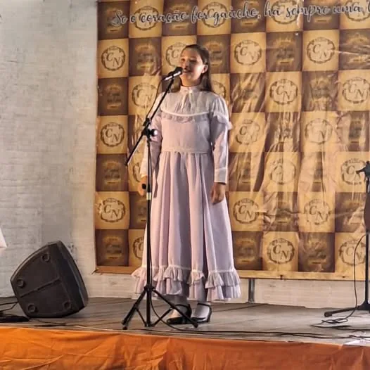
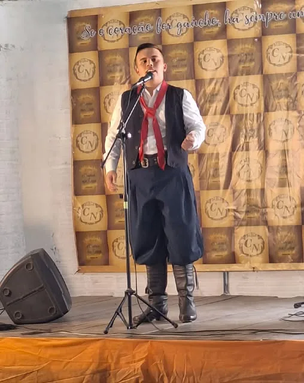

Projetos Culturais
Cultura e formação artística
Danças, declamação, música e fandango: formação gratuita para todas as idades.
Projeto 1
Curso de Fandango
O que é
A porta de entrada para a dança tradicional
O fandango reúne as danças de par enlaçado: marcha, vaneira, valsa, milonga, bugio, chamamé, rancheira, chote e polonaise. O curso é gratuito, vai do iniciante ao aperfeiçoamento e termina em um Baile de Formatura aberto ao público.
É a ação de formação mais antiga do Tropilha e a principal porta de entrada de novos integrantes para as Invernadas Artísticas. O curso inclui ainda a oficina de indumentária, sobre a pilcha, Traje de Honra do Rio Grande do Sul (Lei Estadual nº 8.813/1989).
Em números
17 edições desde 2015
Fotos
Bailes de formatura




Histórico
Edições recentes
| Edição | Semestre | Destaques |
|---|---|---|
| 10ª | 2022/1 | Com o 18º BIMT, aos domingos |
| 11ª | 2023/1 | — |
| 12ª | 2024/1 | Com o Lions Clube Sapucaia Centro; formatura em 1º/6/2024 |
| 13ª | 2024/2 | ~95 inscritos e 60 formandos |
| 14ª | 2025/1 | ~90 inscritos e 50 formandos |
| 15ª | 2025/2 | 120+ inscritos e 56 formandos |
| 16ª | 2026/1 | 110+ inscritos e 64 formandos |
| 17ª | 2026/2 | 80+ inscritos; aulas aos domingos desde 9/8/2026; formatura em 31/10/2026 |
Em 2026 também foi realizado o Curso de Fandango Avançado (milonga, chote e chamamé), com início em 30/08/2026 e vagas gratuitas para os 10 primeiros casais de associados inscritos. Entre os instrutores das turmas estiveram Jeferson Ennes e Carol e Bruno Maciel.
Informações
Onde e como
- Local
- Salão da Igreja Luterana de Sapucaia do Sul, Av. Lúcio Bitencourt, 804 (parceira desde 2025)
- Custo
- Gratuito
- Formatura
- Baile aberto ao público, com ingressos para o jantar
- Inscrições
- As novas turmas são anunciadas nas redes. Informações pelo WhatsApp (51) 98088-1334
- Apoio no período
- PNAB/Aldir Blanc, Edital nº 14/2024 (Fandangueando em Sapucaia do Sul), com prestação de contas aprovada; Lions Clube Sapucaia Centro até 2024
Projeto 2
Invernadas Artísticas e Declamação
Danças tradicionais
Quatro invernadas, uma só família
As Invernadas Artísticas reúnem dançarinos em quatro grupos por faixa etária: Pré-Mirim, Mirim, Juvenil e Adulta. São cerca de 60 integrantes em ensaios semanais, de fevereiro a dezembro, no Salão da Igreja Luterana de Sapucaia do Sul.
Mais que ensinar a dança gaúcha, a prática coletiva desenvolve trabalho em equipe, disciplina, respeito, organização, autoestima e protagonismo. As invernadas se apresentam em eventos comunitários, rodeios, na Semana Farroupilha e em competições. A renovação do elenco é anual, com a Pré-Estreia da Invernada Juvenil.
A Invernada de Danças foi parcialmente apoiada pelo projeto Da Trempe ao Bailado (Edital SEDAC nº 22/2025) e tem apresentações previstas no Circuito Artístico (PNAB/Aldir Blanc).



Declamação gaúcha
A arte da palavra falada
A Invernada de Declamação reúne cerca de 10 declamadores, gratuitamente, em encontros de estudo e ensaio. Além de preservar a tradição oral, a oficina estimula a leitura e desenvolve dicção, oratória, controle da ansiedade e postura, habilidades úteis na escola, no trabalho e na vida.
A invernada circula por eventos de poesia, como o 2º Acampamento da Declamação de Tapes (2025) e o Chama’s da Poesia, do CTG Chama Nativa, de Esteio (2025 e 2026). Em 2026, o Diretor Cultural Bruno Maciel representou o Tropilha na declamação até a 2ª Inter-Regional do ENART, em Bom Princípio.
Tropilha em Versos
Oficina de declamação, desde 2015
A oficina Tropilha em Versos teve edições em 2015, 2017 e 2018, com palestrantes convidados e participantes de várias regiões tradicionalistas. A 3ª edição, em 2018, foi a primeira apoiada por uma instituição: o Fundo Social Sicredi.



Conquistas
Representando o Tropilha
- ENART 2023: Campeão da 12ª Região Tradicionalista
- ENART 2024: Campeão Estadual de Melhor Acampamento
- ENART 2026: Inter-Regional na declamação
- Concurso Cultural da Semana Farroupilha de Sapucaia do Sul: campeão em 2025 e 2026
- 3º Rodeio Artístico do CTG Sentinela do Rio Grande, em Glorinha (2026)
Projeto 3
Outras ações culturais
Musical Tropilha da Canção
Oficinas gratuitas de gaita, violão gaúcho e canto, com instrumentos que permanecem na entidade.
Departamento Cultural
Prendas e peões que lideram as ações culturais e representam o Tropilha. Oficinas de chimarrão e indumentária.
Gestões Culturais
A cada gestão, prendas e peões são escolhidos para representar o Tropilha (2023/24 e 2025/26).
Indumentária e gastronomia
Palestra sobre a pilcha, Traje de Honra do RS (Lei nº 8.813/1989), e oficina de gastronomia gaúcha.
Esportes campeiros
Bocha, bolita, truco e jogo de 48, com canchas em construção e oficinas intergeracionais.
Integração Tradicionalista
Encontros e palestras para associados sobre o MTG e o papel de cada um, desde novembro de 2023.
Participe
Fale com a gente
Informações, inscrições e voluntariado pelo WhatsApp (51) 98088-1334 ou pelo e-mail gtftropilhacrioula@gmail.com.